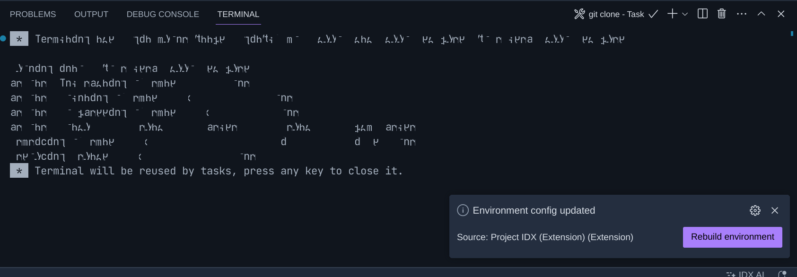
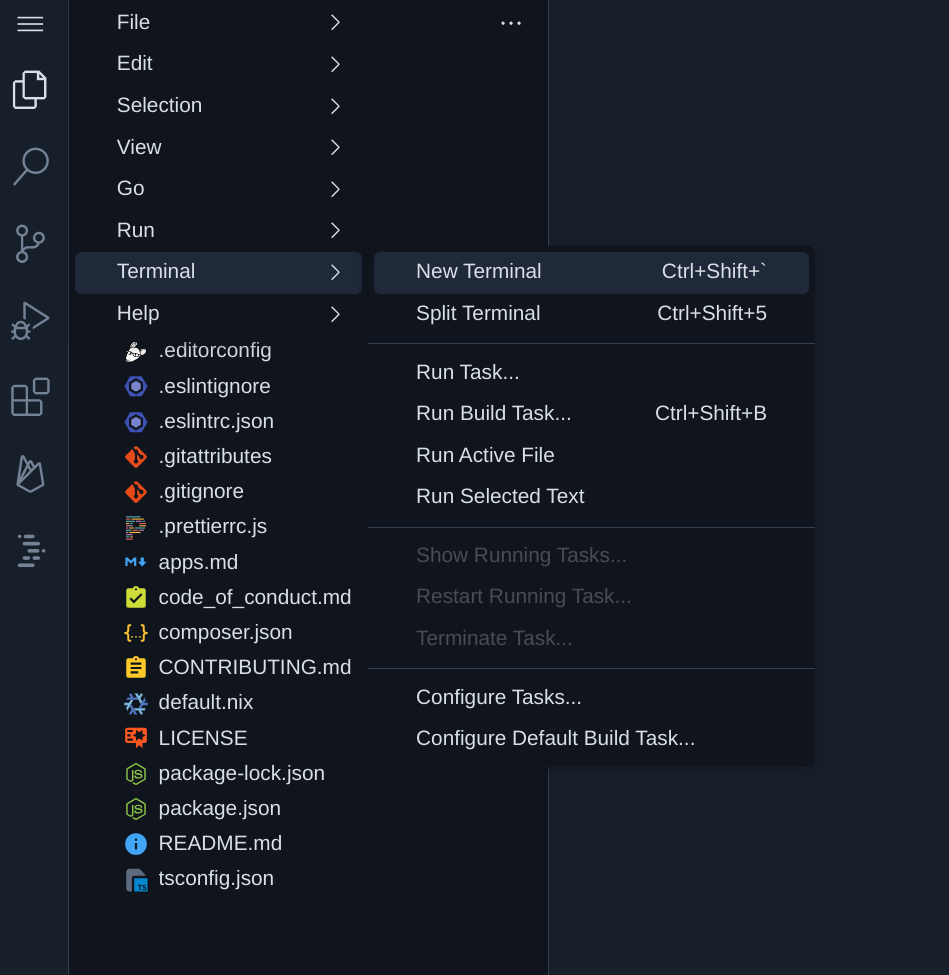

All Posts
All Posts
August 15, 2023 by lloyd tabb
Google recently announced Poject IDX and a Cloud-based, AI-powered coding development enviornment. It turns out that this environment makes a pretty fabulous development environment for working with Malloy.
A Project IDX development environment consists configurable clouds instance, VSCode and AI to help you. We've configured some of our Malloy repositories so that when you open them in Project IDX, everything is setup to run, all you need to do is log into gcloud at the command line.
Setting it up
The first thing is to join the waitlist for Project IDX. Once you've done this, ping the Malloy team in the Slack channel and we'll use our insider influence to help expedite the process.
Import a Repo
Project IDX gives you several choices in starting machine instances. Choose "Import a Repo" and click 'enable Nix for this workspace'. Nix is a way of configuring development environments (more on this later). You can think of it as a super lightweight Docker.

Click "Create" and IDX will create your development environment. Try not to click on things while this is happening.
Rebuild Environment
Once VSCode opens up in your browser, you'll see a notification in the lower-right corner that says Rebuild Enviornment. Click it. This button tells Project IDX to install all the stuff specified in ~/.idx/dev.nix (Malloy and other tooling). If you don't see this button, make any change to the above file and the button will re-appear.
You should see another set of screens about installing stuff and then ultimately you should be back in VSCode.
Log into gcloud
The final step in setting up your Project IDX with Malloy is to log into gcloud so you can run queries against BigQuery.
Open a new terminal window by Clicking the three lines in the upper left corner.
In terminal log into gcloud by running the commands (using your project)
gcloud auth login --update-adc gcloud config set project {my_project_id}
Test your BigQuery connection
Open ~/bigquery/faa/airports.malloy and click Run Query on any of the queries.
Everything should be setup.
As always, please visit our Slack Communitity if you have any problems or feedback.